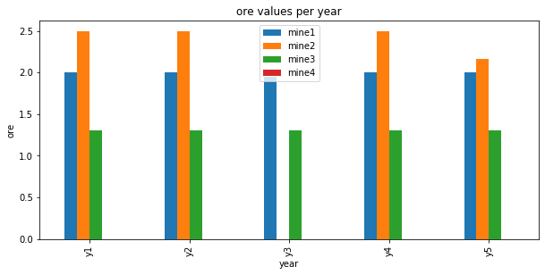
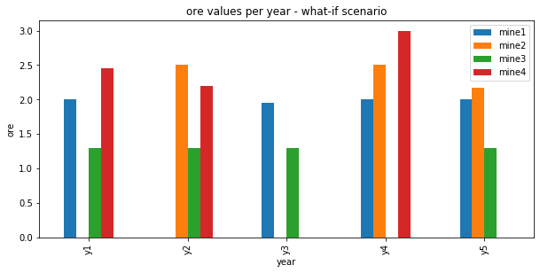

Optimizing mining operations¶
This tutorial includes everything you need to set up IBM Decision Optimization CPLEX Modeling for Python (DOcplex), build a Mathematical Programming model, and get its solution by solving the model on Cloud with IBM ILOG CPLEX Optimizer.
When you finish this tutorial, you’ll have a foundational knowledge of Prescriptive Analytics.
This notebook is part of Prescriptive Analytics for Python
It requires either an installation of CPLEX Optimizers or it can be run on IBM Watson Studio Cloud (Sign up for a free IBM Cloud account and you can start using Watson Studio Cloud right away).
Table of contents:
Describe the business problem¶
This mining operations optimization problem is an implementation of Problem 7 from “Model Building in Mathematical Programming” by H.P. Williams. The operational decisions that need to be made are which mines should be operated each year and how much each mine should produce.
Business constraints¶
- A mine that is closed cannot be worked.
- Once closed, a mine stays closed until the end of the horizon.
- Each year, a maximum number of mines can be worked.
- For each mine and year, the quantity extracted is limited by the mine’s maximum extracted quantity.
- The average blend quality must be greater than or equal to the requirement of the year.
Objective and KPIs¶
Total actualized revenue¶
Each year, the total revenue is equal to the total quantity extracted multiplied by the blend price. The time series of revenues is aggregated in one expected revenue by applying the discount rate; in other terms, a revenue of $1000 next year is counted as $900 actualized, $810 if the revenue is expected in two years, etc.
Total expected royalties¶
A mine that stays open must pay royalties (see the column royalties in the DataFrame). Again, royalties from different years are actualized using the discount rate.
Business objective¶
The business objective is to maximize the net actualized profit, that is the difference between the total actualized revenue and total actualized royalties.
How decision optimization can help¶
Prescriptive analytics (decision optimization) technology recommends actions that are based on desired outcomes. It takes into account specific scenarios, resources, and knowledge of past and current events. With this insight, your organization can make better decisions and have greater control of business outcomes.
Prescriptive analytics is the next step on the path to insight-based actions. It creates value through synergy with predictive analytics, which analyzes data to predict future outcomes.
- Prescriptive analytics takes that insight to the next level by suggesting the optimal way to handle that future situation. Organizations that can act fast in dynamic conditions and make superior decisions in uncertain environments gain a strong competitive advantage.
With prescriptive analytics, you can:
- Automate the complex decisions and trade-offs to better manage your limited resources.
- Take advantage of a future opportunity or mitigate a future risk.
- Proactively update recommendations based on changing events.
- Meet operational goals, increase customer loyalty, prevent threats and fraud, and optimize business processes.
Checking minimum requirements¶
This notebook uses some features of pandas that are available in version 0.17.1 or above.
Use decision optimization¶
Step 1: Import the library¶
Run the following code to import the Decision Optimization CPLEX Modeling library. The DOcplex library contains the two modeling packages, Mathematical Programming and Constraint Programming, referred to earlier.
If CPLEX is not installed, install CPLEX Community edition.
Step 2: Model the data¶
Mining Data¶
The mine data is provided as a pandas DataFrame. For each mine, we are given the amount of royalty to pay when operating the mine, its ore quality, and the maximum quantity that we can extract from the mine.
| royalties | ore_quality | max_extract | |
|---|---|---|---|
| range_mines | |||
| 0 | 5 | 1.0 | 2.0 |
| 1 | 4 | 0.7 | 2.5 |
| 2 | 4 | 1.5 | 1.3 |
| 3 | 5 | 0.5 | 3.0 |
Blend quality data¶
Each year, the average blend quality of all ore extracted from the mines must be greater than a minimum quality. This data is provided as a pandas Series, the length of which is the plan horizon in years.
* Planning mining operations for: 5 years
count 5.000000
mean 0.900000
std 0.223607
min 0.600000
25% 0.800000
50% 0.900000
75% 1.000000
max 1.200000
dtype: float64
Additional (global) data¶
We need extra global data to run our planning model:
- a blend price (supposedly flat),
- a maximum number of worked mines for any given years (typically 3), and
- a discount rate to compute the actualized revenue over the horizon.
Step 3: Prepare the data¶
The data is clean and does not need any cleansing.
Step 4: Set up the prescriptive model¶
* system is: Windows 64bit * Python version 3.7.3, located at: c:\local\python373\python.exe * docplex is present, version is (2, 11, 0) * pandas is present, version is 0.25.1
Create DOcplex model¶
The model contains all the business constraints and defines the objective.
What are the decisions we need to make?
- What mines do we work each year? (a yes/no decision)
- What mine do we keep open each year? (again a yes/no decision)
- What quantity is extracted from each mine, each year? (a positive number)
We need to define some decision variables and add constraints to our model related to these decisions.
Define the decision variables¶
Model: mining_pandas
- number of variables: 60
- binary=40, integer=0, continuous=20
- number of constraints: 0
- linear=0
- parameters: defaults
- problem type is: MILP
Express the business constraints¶
Constraint 1: Only open mines can be worked.¶
In order to take advantage of the pandas operations to create the optimization model, decision variables are organized in a DataFrame which is automatically indexed by ‘range_mines’ and ‘range_years’ (that is, the same keys as the dictionary created by the binary_var_matrix() method).
| work | open | ore | ||
|---|---|---|---|---|
| range_mines | range_years | |||
| 0 | 0 | work_0_0 | open_0_0 | ore_0_0 |
| 1 | work_0_1 | open_0_1 | ore_0_1 | |
| 2 | work_0_2 | open_0_2 | ore_0_2 | |
| 3 | work_0_3 | open_0_3 | ore_0_3 | |
| 4 | work_0_4 | open_0_4 | ore_0_4 |
Now, let’s iterate over rows of the DataFrame “df_decision_vars” and enforce the desired constraints.
The pandas method itertuples() returns a named tuple for each row of a DataFrame. This method is efficient and convenient for iterating over all rows.
Model: mining_pandas
- number of variables: 60
- binary=40, integer=0, continuous=20
- number of constraints: 20
- linear=20
- parameters: defaults
- problem type is: MILP
Constraint 2: Once closed, a mine stays closed.¶
These constraints are a little more complex: we state that the series of open_vars[m,y] for a given mine m is decreasing. In other terms, once some open_vars[m,y] is zero, all subsequent values for future years are also zero.
Let’s use the pandas groupby operation to collect all “open” decision variables for each mine in separate pandas Series. Then, we iterate over the mines and invoke the aggregate() method, passing the postOpenCloseConstraint() function as the argument. The pandas aggregate() method invokes postOpenCloseConstraint() for each mine, passing the associated Series of “open” decision variables as argument. The postOpenCloseConstraint() function posts a set of constraints on the sequence of “open” decision variables to enforce that a mine cannot re-open.
range_mines
0 posted 4 open/close constraints
1 posted 4 open/close constraints
2 posted 4 open/close constraints
3 posted 4 open/close constraints
Name: open, dtype: object
Constraint 3: The number of worked mines each year is limited.¶
This time, we use the pandas groupby operation to collect all “work” decision variables for each year in separate pandas Series. Each Series contains the “work” decision variables for all mines. Then, the maximum number of worked mines constraint is enforced by making sure that the sum of all the terms of each Series is smaller or equal to the maximum number of worked mines. The aggregate() method is used to post this constraint for each year.
range_years
0 work_0_0+work_1_0+work_2_0+work_3_0 <= 3
1 work_0_1+work_1_1+work_2_1+work_3_1 <= 3
2 work_0_2+work_1_2+work_2_2+work_3_2 <= 3
3 work_0_3+work_1_3+work_2_3+work_3_3 <= 3
4 work_0_4+work_1_4+work_2_4+work_3_4 <= 3
Name: work, dtype: object
Constraint 4: The quantity extracted is limited.¶
This constraint expresses two things: * Only a worked mine can give ore. (Note that there is no minimum on the quantity extracted, this model is very simplified). * The quantity extracted is less than the mine’s maximum extracted quantity.
To illustrate the pandas join operation, let’s build a DataFrame that joins the “df_decision_vars” DataFrame and the “df_mines.max_extract” Series such that each row contains the information to enforce the quantity extracted limit constraint. The default behaviour of the pandas join operation is to look at the index of left DataFrame and to append columns of the right Series or DataFrame which have same index. Here is the result of this operation in our case:
| work | open | ore | max_extract | ||
|---|---|---|---|---|---|
| range_mines | range_years | ||||
| 0 | 0 | work_0_0 | open_0_0 | ore_0_0 | 2.0 |
| 1 | work_0_1 | open_0_1 | ore_0_1 | 2.0 | |
| 2 | work_0_2 | open_0_2 | ore_0_2 | 2.0 | |
| 3 | work_0_3 | open_0_3 | ore_0_3 | 2.0 | |
| 4 | work_0_4 | open_0_4 | ore_0_4 | 2.0 | |
| 1 | 0 | work_1_0 | open_1_0 | ore_1_0 | 2.5 |
| 1 | work_1_1 | open_1_1 | ore_1_1 | 2.5 | |
| 2 | work_1_2 | open_1_2 | ore_1_2 | 2.5 | |
| 3 | work_1_3 | open_1_3 | ore_1_3 | 2.5 | |
| 4 | work_1_4 | open_1_4 | ore_1_4 | 2.5 |
Now, the constraint to limit quantity extracted is easily created by iterating over all rows of the joined DataFrames:
Model: mining_pandas
- number of variables: 60
- binary=40, integer=0, continuous=20
- number of constraints: 61
- linear=61
- parameters: defaults
- problem type is: MILP
Blend constraints¶
We need to compute the total production of each year, stored in auxiliary variables.
Again, we use the pandas groupby operation, this time to collect all “ore” decision variables for each year in separate pandas Series. The “blend” variable for a given year is the sum of “ore” decision variables for the corresponding Series.
Model: mining_pandas
- number of variables: 65
- binary=40, integer=0, continuous=25
- number of constraints: 66
- linear=66
- parameters: defaults
- problem type is: MILP
Minimum average blend quality constraint¶
The average quality of the blend is the weighted sum of extracted quantities, divided by the total extracted quantity. Because we cannot use division here, we transform the inequality:
Model: mining_pandas
- number of variables: 65
- binary=40, integer=0, continuous=25
- number of constraints: 71
- linear=71
- parameters: defaults
- problem type is: MILP
KPIs and objective¶
Since both revenues and royalties are actualized using the same rate, we compute an auxiliary discount rate array.
The discount rate array¶
range_years
0 1.0000
1 0.9000
2 0.8100
3 0.7290
4 0.6561
Name: discounts, dtype: float64
Total actualized revenue¶
Total expected revenue is the sum of actualized yearly revenues, computed as total extracted quantities multiplied by the blend price (assumed to be constant over the years in this simplified model).
Total actualized royalty cost¶
The total actualized royalty cost is computed for all open mines, also actualized using the discounts array.
This time, we use the pandas join operation twice to build a DataFrame that joins the “df_decision_vars” DataFrame with the “df_mines.royalties” and “s_discounts” Series such that each row contains the relevant information to calculate its contribution to the total actualized royalty cost. The join with the “df_mines.royalties” Series is performed by looking at the common “range_mines” index, while the join with the “s_discounts” Series is performed by looking at the common “range_years” index.
| work | open | ore | royalties | discounts | disc_royalties | ||
|---|---|---|---|---|---|---|---|
| range_mines | range_years | ||||||
| 0 | 0 | work_0_0 | open_0_0 | ore_0_0 | 5 | 1.0000 | 5.0000 |
| 1 | work_0_1 | open_0_1 | ore_0_1 | 5 | 0.9000 | 4.5000 | |
| 2 | work_0_2 | open_0_2 | ore_0_2 | 5 | 0.8100 | 4.0500 | |
| 3 | work_0_3 | open_0_3 | ore_0_3 | 5 | 0.7290 | 3.6450 | |
| 4 | work_0_4 | open_0_4 | ore_0_4 | 5 | 0.6561 | 3.2805 |
The total royalty is now calculated by multiplying the columns “open”, “royalties” and “discounts”, and to sum over all rows. Using pandas constructs, this can be written in a very compact way as follows:
Express the objective¶
The business objective is to maximize the expected net profit, which is the difference between revenue and royalties.
Solve with Decision Optimization¶
Model: mining_pandas
- number of variables: 65
- binary=40, integer=0, continuous=25
- number of constraints: 71
- linear=71
- parameters: defaults
- problem type is: MILP
* model mining_pandas solved with objective = 161.438
* KPI: Total Actualized Revenue = 214.674
* KPI: Total Actualized Royalties = 53.236
Step 5: Investigate the solution and then run an example analysis¶
To analyze the results, we again leverage pandas, by storing the solution value of the ore variables in a new DataFrame. Note that we use the float function of Python to convert the variable to its solution value. Of course, this requires that the model be successfully solved. For convenience, we want to organize the ore solution values in a pivot table with years as row index and mines as columns. The pandas unstack operation does this for us.
| mine1 | mine2 | mine3 | mine4 | |
|---|---|---|---|---|
| y1 | 2.00 | 2.500000 | 1.3 | 0.0 |
| y2 | 2.00 | 2.500000 | 1.3 | 0.0 |
| y3 | 1.95 | 0.000000 | 1.3 | 0.0 |
| y4 | 2.00 | 2.500000 | 1.3 | 0.0 |
| y5 | 2.00 | 2.166667 | 1.3 | 0.0 |
Visualize results¶
In this section you’ll need the matplotlib module to visualize the results of the solve.
Adding operational constraints.¶
What if we wish to add operational constraints? For example, let us forbid work on certain pairs of (mines, years). Let’s see how this impacts profit.
First, we add extra constraints to forbid work on those tuples.
Model: mining_pandas
- number of variables: 65
- binary=40, integer=0, continuous=25
- number of constraints: 77
- linear=77
- parameters: defaults
- problem type is: MILP
The previous solution does not satisfy these constraints; for example (0, 1) means mine 1 should not be worked on year 2, but it was in fact worked in the above solution.
To help CPLEX find a feasible solution, we will build a heuristic feasible solution and pass it to CPLEX.
Using an heuristic start solution¶
In this section, we show how one can provide a start solution to CPLEX, based on heuristics.
First, we build a solution in which mines are worked whenever possible, that is for all couples (m,y) except for those in forced_stops.
Then we pass this solution to the model as a MIP start solution and re-solve, this time with CPLEX logging turned on.
CPXPARAM_Read_DataCheck 1
2 of 5 MIP starts provided solutions.
MIP start 'm1' defined initial solution with objective 108.9605.
Tried aggregator 5 times.
MIP Presolve eliminated 41 rows and 29 columns.
MIP Presolve modified 23 coefficients.
Aggregator did 36 substitutions.
All rows and columns eliminated.
Presolve time = 0.00 sec. (0.18 ticks)
Root node processing (before b&c):
Real time = 0.00 sec. (0.27 ticks)
Parallel b&c, 12 threads:
Real time = 0.00 sec. (0.00 ticks)
Sync time (average) = 0.00 sec.
Wait time (average) = 0.00 sec.
------------
Total (root+branch&cut) = 0.00 sec. (0.27 ticks)
* model mining_pandas solved with objective = 157.936
* KPI: Total Actualized Revenue = 228.367
* KPI: Total Actualized Royalties = 70.431
You can see in the CPLEX log above, that our MIP start solution provided a good start for CPLEX, defining an initial solution with objective 157.9355
Now we can again visualize the results with pandas and matplotlib.
As expected, mine1 is not worked in year 2: there is no blue bar at y2.
Summary¶
You learned how to set up and use IBM Decision Optimization CPLEX Modeling for Python to formulate a Mathematical Programming model and solve it with CPLEX.
References¶
- CPLEX Modeling for Python documentation
- Decision Optimization on Cloud
- Need help with DOcplex or to report a bug? Please go here.
- Contact us at dofeedback@wwpdl.vnet.ibm.com.
Copyright ? 2017-2019 IBM. IPLA licensed Sample Materials.